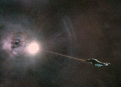
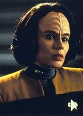
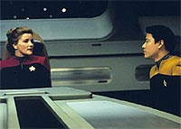
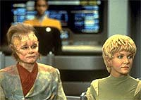
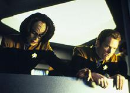

|
MANCHETE
DO EPISÓDIO
Continuação
ao piloto da série é feita
com grande show de tecnobaboseira
Episódio
anterior | Próximo
episódio
Sinopse:
Data Estelar: 48439.7.
 Torres
recebe uma reprimenda de Chakotay depois de quebrar o nariz do
tenente Carey durante uma discussão na Engenharia. Mas, apesar da
natureza volátil de sua amiga, o comandante confia nas habilidades
dela e a recomenda como a nova engenheira-chefe da Voyager. Janeway
se surpreende com a indicação, porém, antes que tenha a chance de
considerá-la para o posto, a nave é sacudida ao entrar em uma
região de distorções espaciais. Pouco tempo depois, a
tripulação descobre uma outra nave que está presa em uma
singularidade quântica, um poderoso campo de energia que circula
uma estrela morta.
Enquanto a equipe da Engenharia tenta
encontrar um modo de ajudar a outra nave, Janeway questiona as
perícias dos oficiais Maquis. Mesmo assim, promete considerar B'Elanna
para o cargo vago.
 Percebendo
que a Voyager não tem potência suficiente para realizar o resgate
sozinha, a tripulação traça um curso para longe da singularidade,
para buscar ajuda. No entanto, eles logo descobrem que estão
retornando para a mesma estrela morta. Perplexos, novamente tentam
se afastar e acabam voltando para onde estavam.
Enquanto as tensões aumentam entre
tripulantes da Frota e Maquis, Torres trabalha com Carey para
descobrir o que está havendo. Notando os efeitos peculiares da
singularidade no médico holográfico da Voyager, Torres sugere algo
que pode permitir o contato entre as duas naves. Embora o plano
funcione, quando eles ouvem uma mensagem da outra nave, descobrem
que estão recebendo um chamado da própria Voyager. Em suma,
estavam observando um reflexo distorcido de si mesmos. Após a
constatação, passaram a procurar um jeito de sair de lá.
 Quando
Torres descobre que a outra nave aparentemente presa nas
distorções é uma imagem espelhada da Voyager, ela percebe que a
tripulação precisa retornar ao 'rasgo' que fizeram quando entraram
na anomalia, e sair de lá antes que a estrela colapse, caso
contrário, ficarão presos para sempre. Usando um raio dekyon
disparado de uma nave auxiliar pilotada por Janeway e Torres, eles
forçam a abertura o suficiente para que a Voyager escape. Por sua
iniciativa e abordagem criativa que acabou salvando a todos, Torres
recebe o posto de engenheira-chefe e o tenente Carey é o primeiro a
parabenizá-la, deixando as diferenças para trás.
Comentários:
O objetivo
de "Parallax" é nobre: dar continuidade aos
eventos mostrados no piloto e detalhar a adaptação das duas
tripulações --os maquis e os oficiais da Frota-- à realidade de
seu isolamento no quadrante Delta. Claro que conflitos entre maquis
e federados deveriam estar presentes em uma situação extrema como
essa, e isso é sintetizado pelo debate para eleger B'Elanna Torres
a engenheira-chefe da nave.
 O
incrível é que não era necessário falar tanta bobagem para
contar essa história. O encontro do reflexo da Voyager na beira da
singularidade, a definição de horizonte dos eventos, a
possibilidade de uma "brecha" e o discurso de Janeway
sobre a necessidade de abrir caminho na marra são todos elementos
absurdos, mal elaborados, inconsistentes e desnecessários. O
incrível é que não era necessário falar tanta bobagem para
contar essa história. O encontro do reflexo da Voyager na beira da
singularidade, a definição de horizonte dos eventos, a
possibilidade de uma "brecha" e o discurso de Janeway
sobre a necessidade de abrir caminho na marra são todos elementos
absurdos, mal elaborados, inconsistentes e desnecessários.
Como bem apontou Lawrence Krauss, em seu livro A Física de
Jornada nas Estrelas, o horizonte dos eventos não pode ter uma
brecha porque não é uma barreira real, mas um conceito matemático.
Trata-se do ponto em que não mais é possível escapar à atração
gravitacional de uma singularidade, um nome um pouco mais técnico
para o bom e velho buraco negro --uma estrela em colapso
gravitacional, de onde nem a luz pode escapar.
 Não
é, como definiu Neelix durante o episódio, "uma poderosa
barreira de energia", mas apenas algo tão paupável quanto a
linha do Equador ou o trópico de Capricórnio.
Mais um detalhe: logo no começo, a Voyager detecta um sinal (que
mais tarde descobriria ser uma transmissão feita por ela mesma)
vindo de dentro da singularidade! Mas como, se nada pode escapar de
um buraco negro?
Jornada nas Estrelas não é ciência pura, é apenas uma série
de ficção científica, diriam alguns. Mas vale lembrar que precisão
e caldo de galinha não fazem mal a ninguém. Um cochilo de Andre
Bormanis, consultor científico da série.
 A
história foi criada para melhor desenvolver o personagem de B'Elanna,
e foi bem-sucedida nesse ponto. Também nele é que começa a surgir
a amizade entre o Doutor e Kes, que se tornaria mais forte ao longo
da série. Aliás, o Doutor já começa a mostrar o seu potencial
como personagem neste episódio.
Sua participação e a historieta envolvendo seu
"encolhimento" em razão de um defeito no projetor holográfico
dão brilho especial a um episódio com objetivo claro, mas perdido
em termos de verossimilhança.
Citações:
Chakotay - ".... on
one side I'm facing a Vulcan who wants to court-martial you, and on
the other I'm facing all the maquis who are ready to seize the ship
over this. You've turned this into one lousy day for me,
Torres!"
("... de um lado enfrento um Vulcano que quer levar
você à corte marcial, e do outro estou enfrentando todos os maquis
que estão prestes a tomar a nave por causa disso. Você tornou este
um dia bem difícil para mim, Torres!")
Chakotay - "I have no intention of being your token
maquis officer."
("Não tenho a intenção de me tornar o seu modelinho de
oficial maquis")
Chakotay - "If our situations had been reversed, would
you have served under me?"
("Se nossas situações fossem inversas, você teria servido
sob meu comando?")
Trivia:
 A personagem Seska (Martha Hackett) será protagonista de diversos
episódios na segunda temporada. A mesma atriz interpretou uma
Romulana nos episódios "The Search - Partes I &
II" da série Deep Space Nine, episódios do 3º ano
dessa série.
A personagem Seska (Martha Hackett) será protagonista de diversos
episódios na segunda temporada. A mesma atriz interpretou uma
Romulana nos episódios "The Search - Partes I &
II" da série Deep Space Nine, episódios do 3º ano
dessa série.
Segundo a co-produtora de Voyager, Jeri Taylor, o conceito do episódio
"Parallax" foi um dos primeiros a ser aprovado
quando a equipe de criação começou com o desenvolvimento de histórias
para série. "Fomos capazes de colocar em uma só história um
arco inteiro de relacionamento entre B'Elanna e Janeway", disse
Jeri Taylor, "abordamos um tema bem ao estilo do Brannon
(Braga), ou seja, algum tipo de bizarra distorção temporal. E
ainda fizemos a tripulação sofrer com questões como "Nós
estamos perdidos e coisas não estão dando certo. O que faremos?
Precisamos trabalhar em conjunto. E agora, quem será o médico da
nave? E o engenheiro-chefe?".
Ficha
técnica:
História de Jim Trombetta
Roteiro de Brannon Braga
Dirigido por Kim Friedman
Exibido em 23/01/1995
Produção: 003
Elenco:
Kate Mulgrew como
Kathryn Janeway
Robert Beltran como Chakotay
Roxann Biggs-Dawson como B'Elanna Torres
Robert Duncan McNeill como Tom Paris
Jennifer Lien como Kes
Ethan Phillips como Neelix
Robert Picardo como Doutor
Tim Russ como Tuvok
Garrett Wang como Harry Kim
Elenco convidado:
Josh Clark como Carey
Martha Hackett como Seska
Justin Williams como Jarvin
Episódio
anterior | Próximo
episódio
|